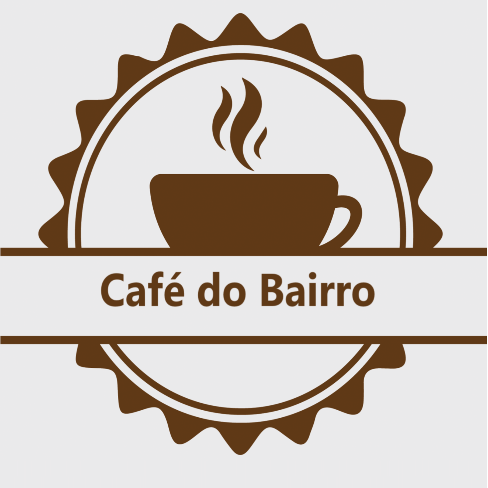

<!doctype hmtl> 

<hmtl>

	<head>
		<title>Café do Bairro</title>
		<meta charset="utf-8"> 
		<link href="style.css" rel="stylesheet">
	</head>

	<body>
		
	<div id="bg">
		<h1 class="titulo">Café do Bairro</h1>

		<div class="navbar">
		<tr>
			<td align="right">
				<a href="#sobre"; class="menu">Quem somos nós |</a> 
				<a href="#cafe_do_dia"; class="menu">Café do dia |</a> 
				<a href="#cafes"; class="menu">Cardápio - Cafés |</a> 
				<a href="#bolos"; class="menu">Cardápio - Bolos |</a> 
				<a href="#endereco"; class="menu">Endereço</a> 
			</td>
		</tr>
		</div>

		<section id ="sobre"> 
			<h2 class="sobre">./h2>
			<h3 class="titulos_do_dia">Quem somos nós </h3>
				  <div class="gallery">
				  	
				    
				    
				    
				  </div>

				  <div class="modal">
				    <div class="modal-content">
				      
				    </div>
				  </div>

				  <script src="js/script.js"></script>


				<p class="descricao">O Refúgio Aromático na Correria Urbana
					Em meio à agitação e ao ritmo frenético das grandes cidades, surge uma pequena joia chamada Café do Bairro. Localizado em um charmoso bairro residencial, este estabelecimento encanta os amantes de café com sua atmosfera acolhedora e aroma irresistível</p>
		</section>

		<section id ="cafe_do_dia"> 

			<h2 class="separador">Café do Dia</h2>
			<h3 class="titulos_do_dia">Espresso com Doce de Leite</h3>
			
			<p class="descricao">Servido em uma xícara com borda de Doce de Leite, em que cada gole é</p>

			<h3 class="titulos_do_dia">Bolo Chocolate Baby</h3>
			
			<p class="descricao">Leite integral, farinha de trigo enriquecida com ferro e ácido fólico, açúcar, ovo, gordura vegetal, chocolate em pó, fermentos químicos pirofosfato de sódio, bicarbonato de sódio e fosfato monocálcico. CONTÉM GLÚTEN E LACTOSE. Alérgicos: contém leite e derivados, derivados do trigo e ovo.</p>		

		</section>

		<br></br>

		<section id ="cafes"> 
		<h2 class="separador">Cardápio - Cafés</h2>
			<h3 class="titulos">Espresso</h3>
				
				<p class="descricao">Nosso Espresso é preparado com os melhores grãos. Disponibilizamos 8 variedades de Cafés Espressos e sugerimo</p>

			<h3 class="titulos">Espresso Curto | Ristretto</h3>
				
				<p class="descricao">Com menos volume de água, o Ristreto é uma bebida com um sabor mais puro</p>

			<h3 class="titulos">Espresso Duplo | Duppio</h3>
				
				<p class="descricao">O Espresso Duplo, assim como o Espresso, é preparado com os melhores grãos. São 100ml</p>

			<h3 class="titulos">Espresso com chocolate</h3>
				
				<p class="descricao">Nosso melhor Espresso servido com chocolate em pó.</p>
		</section>

		<br></br>

		<section id ="bolos"> 
		<h2 class="separador">Cardápio - Bolos</h2>
			<h3 class="titulos">Bolo Ganache de Chocolate com Morango</h3>
				
				<p class="descricao">Chocolate meio amargo, creme de leite, morango, farinha de trigo enriquecida com ferro e ácido fólico, açúcar, ovo, leite condensado, óleo vegetal, chocolate em pó, fermentos químicos amido de milho, pirosfato ácido de sódio, bicarbonato de sódio e carbonato de cálcio, amido e sal. CONTÉM GLÚTEN. CONTÉM LACTOSE.
				ALÉRGICOS: CONTÉM OVOS E DERIVADOS DE TRIGO, SOJA E LEITE.
				PODE CONTER CENTEIO, CEVADA, AVEIA, TRITICALE, AMENDOIM, AMÊNDOA, AVELÃS, CASTANHA-DE-CAJU, CASTANHA-DO-PARÁ, NOZES E PECÃ.</p>

			<h3 class="titulos">Bolo Piscina de Chocolate com Leitinho</h3>
				
				<p class="descricao">Leite condensado, farinha de trigo enriquecida com ferro e ácido fólico, açúcar, água, creme de leite, leite em pó integral, margarina sem sal, óleo de soja , chocolate em pó, leite integral, fermentos químicos (amido de milho, pirosfato ácido de sódio, bicarbonato de sódio e carbonato de cálcio), amido de milho, achocolatado em pó, margarina com sal e sal refinado. CONTÉM GLÚTEN. CONTÉM LACTOSE. ALÉRGICOS: CONTÉM OVOS, LEITE, DERIVADOS DE TRIGO, SOJA E LEITE. PODE CONTER TRAÇOS DE CENTEIO, CEVADA, AVEIA, TRITICALE, AMENDOIM, CASTANHA-DO-PARÁ E NOZES.</p>

			<h3 class="titulos">Bolo Ganache de Chocolate com Beijinho</h3>
				
				<p class="descricao">Creme de leite, leite condensado, açúcar, farinha de trigo enriquecida com ferro e ácido fólico, chocolate meio amargo, água, ovos, óleo de soja, coco ralado, chocolate em pó, coco em flocos, margarina sem sal,  fermentos químicos (amido de milho, pirosfato ácido de sódio, bicarbonato de sódio e carbonato de cálcio), amido de milho e sal refinado.
				CONTÉM GLÚTEN. CONTÉM LACTOSE. ALÉRGICOS: CONTÉM OVOS, LEITE, DERIVADOS DE TRIGO, SOJA, LEITE E COCO. PODE CONTER TRAÇOS DE CENTEIO, CEVADA, AVEIA, TRITICALE, AMENDOIM, CASTANHA DE CAJU, CASTANHA-DO-PARÁ, AVELÃS, PECÃS E NOZES.</p>

			<h3 class="titulos">Bolo Piscina Romeu e Julieta</h3>
				
				<p class="descricao">Leite integral, leite condensado, açúcar, creme de leite, óleo de soja, goiabada cremosa, ovos, requeijão cremoso, fubá, farinha de trigo com fermento enriquecida com ferro e ácido fólico, queijo curado ralado, fermentos químicos (amido de milho, pirosfato ácido de sódio, bicarbonato de sódio e carbonato de cálcio) e amido de milho. CONTÉM GLÚTEN. CONTÉM LACTOSE. ALÉRGICOS: CONTÉM OVOS, LEITE E DERIVADOS DE TRIGO, LEITE E SOJA. PODE CONTER CENTEIO, CEVADA, AVEIA, TRITICALE, AMENDOIM, AVELÃ, CASTANHA-DO-PARÁ, NOZES E PECÃ.</p>
		</section>

		<br></br>

		<section id ="endereco"> 
		<h2 class="separador">Endereço</h2>
				
				<p class="descricao">LD da Banca de Revista - R. Almiscar, Numero 490 - Monte Verde, Florianópolis - SC, 88032-609</p>
				<h3>Contatos</h3>
				<p class="descricao">Telefone: 48 3232-3232 | Whatsapp: 48 9292-9292 | Instagram: @cafedobairro</p>

		</section>

		<footer class="footer">Todos os direitos reservados</footer>
	</div>
	</body>
</hmtl>